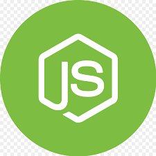
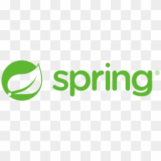
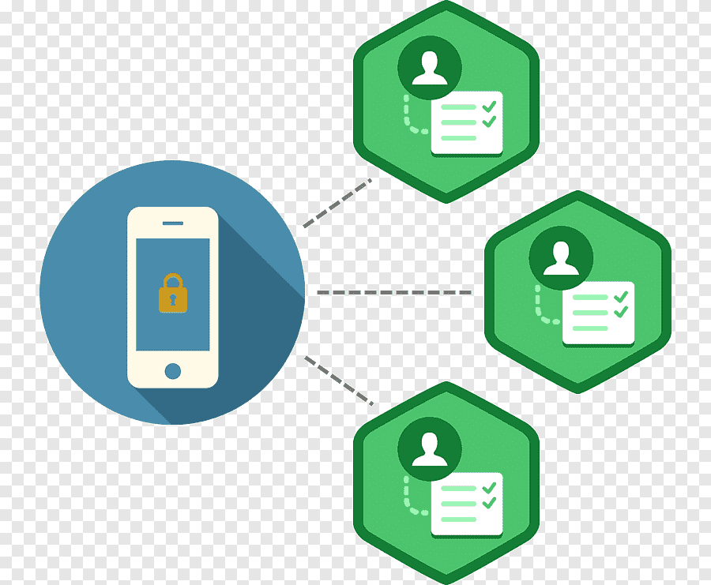

Lenguajes de Programación Back End
- Python:
- Java:
- PHP:
- Ruby:
Características: Python es conocido por su legibilidad y sintaxis clara. Es un lenguaje de programación multipropósito que se usa ampliamente en el desarrollo web. Tiene una gran comunidad de desarrolladores y una amplia variedad de bibliotecas y frameworks.
Frameworks destacados: Django y Flask son dos de los frameworks web más populares para el desarrollo Back End en Python. Django es conocido por su enfoque en la eficiencia y la seguridad, mientras que Flask es más ligero y flexible, lo que permite a los desarrolladores elegir sus propias herramientas.

Características: Java es un lenguaje de programación de propósito general que se utiliza en aplicaciones empresariales a gran escala debido a su portabilidad y escalabilidad. Java se ejecuta en la Máquina Virtual de Java (JVM), lo que permite que el código sea independiente de la plataforma.
Frameworks destacados: Spring es un framework muy utilizado en el desarrollo web Java. Proporciona un amplio conjunto de módulos y herramientas para simplificar el desarrollo de aplicaciones empresariales.

Características: PHP (Hypertext Preprocessor) es un lenguaje de script ampliamente utilizado en el desarrollo de aplicaciones web dinámicas. Se integra bien con servidores web como Apache y es conocido por su facilidad de uso y flexibilidad.
Frameworks destacados: Algunos de los frameworks populares en PHP son Laravel, Symfony y CodeIgniter. Estos frameworks simplifican el desarrollo de aplicaciones web al proporcionar estructura y características predefinidas.

Características: Ruby es un lenguaje de programación dinámico y de alto nivel conocido por su elegancia y facilidad de lectura. Ruby on Rails (también conocido como Rails) es un framework que se utiliza para desarrollar aplicaciones web de manera rápida y estructurada.
Frameworks destacados: Ruby on Rails es uno de los frameworks más conocidos en el desarrollo web Ruby. Ofrece una estructura MVC (Model-View-Controller) que facilita la organización del código y la creación de aplicaciones web eficientes.

Quieres conocer mas sobre el tema ,entra al siguiente link de un video, donde podras conocer mas sobre el tema.
Frameworks de Desarrollo Back End
- Node.js:
- Programación asíncrona con el uso de callbacks y Promesas.
- Amplio ecosistema de paquetes y módulos disponibles a través de npm (Node Package Manager).
- Utilizado en aplicaciones web en tiempo real, aplicaciones de transmisión de datos y microservicios.
- Django:
- ORM (Object-Relational Mapping) incorporado para trabajar con bases de datos de manera eficiente.
- Sistema de autenticación y seguridad integrado.
- Administrador de Django para una interfaz de administración predefinida.
- Ruby on Rails:
- Uso de ActiveRecord para interactuar con bases de datos de manera sencilla.
- Generadores de código para acelerar el desarrollo.
- Enfoque en la "magia" de Rails, lo que significa que realiza muchas tareas automáticamente.
- Spring Boot:
- Configuración automática basada en convenciones.
- Contenedor integrado de Servlet para desarrollo web.
- Soporte para la creación de microservicios y aplicaciones RESTful.
Descripción: Node.js es un entorno de ejecución de JavaScript en el lado del servidor. Es famoso por su enfoque en la programación asíncrona, lo que significa que puede manejar muchas conexiones simultáneas sin bloquear el hilo de ejecución. Esto lo hace adecuado para aplicaciones en tiempo real y servidores rápidos y escalables.
Características destacadas:
Ejemplo de uso: Aplicaciones de chat en tiempo real, servidores web, aplicaciones de transmisión en vivo.
Descripción: Django es un framework de desarrollo web de alto nivel escrito en Python. Se centra en la creación de aplicaciones web robustas y seguras siguiendo el patrón Modelo-Vista-Controlador (MVC). Django promueve la reutilización de código y la eficiencia en el desarrollo.

Características destacadas:
Ejemplo de uso: Sitios web complejos, aplicaciones empresariales, aplicaciones web seguras.
Descripción: Ruby on Rails, comúnmente conocido como Rails, es un framework de desarrollo web que utiliza el lenguaje Ruby. Sigue el patrón Modelo-Vista-Controlador (MVC) y favorece la convención sobre la configuración para una eficiencia óptima. Rails es conocido por su simplicidad y productividad.

Características destacadas:
Ejemplo de uso: Aplicaciones web rápidas para startups, proyectos ágiles de desarrollo.
Descripción: Spring Boot es un framework para Java que simplifica la construcción de aplicaciones empresariales. Se encarga de gran parte de la configuración automáticamente, lo que facilita el desarrollo y despliegue de aplicaciones. Spring Boot se basa en el ecosistema Spring.
Características destacadas:
Ejemplo de uso: Aplicaciones empresariales de cualquier escala, servicios web, microservicios.
Quieres conocer mas sobre el tema ,entra al siguiente link de un video, donde podras conocer mas sobre el tema.
Bases de Datos y Back End
- SQL (Lenguaje de consulta estructurado):
- Utiliza comandos como SELECT, INSERT, UPDATE y DELETE para interactuar con datos.
- Permite definir la estructura de las tablas y establecer relaciones entre ellas.
- Proporciona un alto nivel de integridad de datos y seguridad.
- NoSQL (Bases de datos No relacionales):
- No requieren un esquema fijo, lo que permite flexibilidad en la estructura de datos.
- Pueden manejar grandes cantidades de datos y escalabilidad horizontal.
- Adecuadas para aplicaciones web modernas y big data.
- ORM (Object-Relational Mapping):
- Abstrae la complejidad de las consultas SQL al proporcionar métodos de alto nivel para interactuar con la base de datos.
- Mapea objetos de clases a tablas de bases de datos y viceversa.
- Ayuda a reducir la duplicación de código y facilita el mantenimiento del código.
Descripción: SQL es un lenguaje de programación utilizado para gestionar bases de datos relacionales. Permite la creación, modificación y consulta de datos en bases de datos relacionales. Se utiliza ampliamente en aplicaciones que requieren almacenamiento y gestión estructurada de datos.

Características destacadas:
Ejemplo de uso: Sistemas de gestión de bases de datos relacionales como MySQL, PostgreSQL, Microsoft SQL Server.
Descripción: NoSQL se refiere a una variedad de bases de datos que no siguen el modelo relacional tradicional. Estas bases de datos son ideales para almacenar grandes volúmenes de datos no estructurados o semiestructurados, como documentos JSON o datos de sensores.

Características destacadas:
Ejemplo de uso: MongoDB para almacenamiento de documentos, Cassandra para datos distribuidos y escalables.
Descripción: ORM es una técnica que facilita la interacción entre bases de datos relacionales y código en lenguajes de programación orientados a objetos, como Java o Python. Traduce registros de bases de datos en objetos que pueden manipularse en el código de manera más natural.
Características destacadas:
Ejemplo de uso: Hibernate (Java), Entity Framework (C#), SQLAlchemy (Python).
Quieres conocer mas sobre el tema ,entra al siguiente link de un video, donde podras conocer mas sobre el tema.
APIs y Servicios Web
- API (Interfaz de Programación de Aplicaciones):
- Las API pueden utilizar diferentes protocolos de comunicación, como HTTP, REST, SOAP, GraphQL, etc.
- Las API REST son un enfoque común en el desarrollo web y utilizan solicitudes HTTP (GET, POST, PUT, DELETE) para acceder y manipular recursos a través de URLs.
- Las API son fundamentales en la integración de sistemas y servicios, permitiendo que aplicaciones de terceros accedan a datos o funcionalidades de una aplicación principal.
- SOAP (Simple Object Access Protocol):
- Utiliza un formato XML para estructurar los mensajes, lo que facilita la interoperabilidad entre diferentes plataformas.
- Proporciona un alto nivel de seguridad y control sobre las transacciones.
- Es especialmente adecuado para aplicaciones empresariales y servicios que requieren transacciones seguras y confiables.
- Microservicios:
- Permite la división de aplicaciones en componentes más manejables y escalables.
- Los microservicios pueden implementarse utilizando diferentes tecnologías y lenguajes de programación.
- Facilita la implementación de DevOps y CI/CD (Integración Continua/Despliegue Continuo) para un desarrollo ágil y rápido.
Descripción: Una API (Interfaz de Programación de Aplicaciones) es un conjunto de reglas y protocolos que permiten que diferentes aplicaciones o servicios se comuniquen entre sí. Proporciona un conjunto de funciones y métodos que una aplicación puede utilizar para acceder y solicitar datos o funcionalidades de otro sistema, servicio o aplicación.

Características destacadas:
Ejemplo de uso: Acceso a datos de redes sociales a través de sus APIs (por ejemplo, la API de Twitter), integración de sistemas de pago en línea, acceso a datos de ubicación a través de la API de Google Maps.
Descripción: SOAP es un protocolo de comunicación utilizado en el intercambio de información estructurada en la implementación de servicios web. Se basa en XML para definir el formato de los mensajes y utiliza el estándar WSDL (Lenguaje de Descripción de Servicios Web) para describir los servicios y los métodos disponibles.
Características destacadas:
Ejemplo de uso: Integración de sistemas empresariales, comunicación entre aplicaciones distribuidas en entornos corporativos.
Descripción: Los microservicios son un enfoque arquitectónico en el desarrollo de software en el que una aplicación se construye como un conjunto de servicios pequeños e independientes que se comunican entre sí a través de API. Cada microservicio se centra en una tarea o función específica y puede desarrollarse, implementarse y escalarse de manera independiente.

Características destacadas:
Ejemplo de uso: Grandes aplicaciones web y sistemas empresariales que se benefician de la modularidad y la escalabilidad, como aplicaciones de comercio electrónico y plataformas en línea.
Quieres conocer mas sobre el tema ,entra al siguiente link de un video, donde podras conocer mas sobre el tema.
Seguridad en Back End Development
- Autenticación y Autorización:
- Encriptación:
- Protege los datos confidenciales de accesos no autorizados.
- Utiliza algoritmos matemáticos para convertir datos en un formato ilegible.
- Requiere una clave (clave de encriptación) para desencriptar y acceder a los datos.
- Prevención de Ataques:
- Utiliza técnicas de validación de datos y parámetros para prevenir la inyección de código malicioso.
- Implementa controles de seguridad en el lado del servidor y del cliente para prevenir ataques XSS.
- Utiliza servicios de mitigación de DDoS y medidas de seguridad para proteger contra ataques de denegación de servicio.
Autenticación: La autenticación se refiere al proceso de verificar la identidad de un usuario para asegurarse de que realmente es quien dice ser. Por lo general, esto se logra mediante credenciales, como un nombre de usuario y una contraseña, o mediante métodos de autenticación más avanzados, como el uso de tokens o autenticación biométrica.
Autorización: La autorización implica determinar qué acciones y recursos específicos tiene permitido acceder o realizar un usuario autenticado. Se define qué usuarios tienen acceso a qué partes de una aplicación o sistema, y bajo qué condiciones.
Descripción: La encriptación es el proceso de convertir información en un formato codificado o cifrado, de modo que solo las partes autorizadas puedan acceder y descifrar la información. Existen varios algoritmos y métodos de encriptación disponibles para proteger datos confidenciales durante la transmisión y el almacenamiento.
Características destacadas:
Ejemplo de uso: La encriptación se utiliza en la transmisión segura de datos a través de HTTPS (HTTP seguro), en el almacenamiento de contraseñas en bases de datos, en la protección de datos de tarjetas de crédito, entre otros.
Descripción: La prevención de ataques se refiere a la implementación de medidas y prácticas de seguridad para proteger una aplicación o sistema contra vulnerabilidades y ataques comunes. Algunos de los tipos de ataques comunes incluyen inyecciones SQL, ataques de cross-site scripting (XSS), y ataques de denegación de servicio (DDoS).

Características destacadas:
Ejemplo de uso: La prevención de ataques es esencial en la seguridad de aplicaciones web y sistemas en línea para proteger la integridad de los datos y la disponibilidad del servicio.